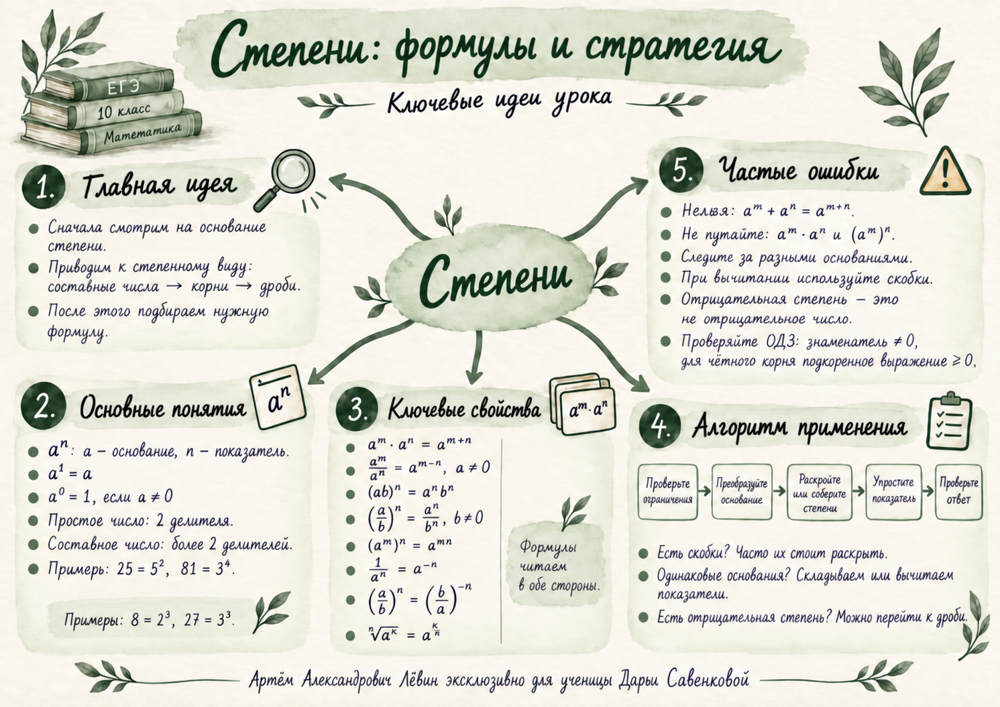

Пример 1 · составное основание
25 = 5². Привели составное основание к степени.
Получили 5⁰·³⁶ · (5²)⁰·³².
Степень в степени даёт 5⁰·⁶⁴.
5⁰·³⁶ · 5⁰·⁶⁴ = 5¹ = 5.
Полевой математический журнал · занятие 01
Маршрут занятия: увидеть структуру основания, привести составные числа, корни и дроби к удобному степенному виду, затем последовательно применять свойства степеней и контролировать ограничения.
На памятке собраны формулы, алгоритм и типичные ошибки урока.

01 · База
a — основание, n — показатель.
Если показатель явно не записан, подразумевается единица.
02 · Формулы
Формулы полезно читать в обе стороны: это позволяет раскрывать скобки, собирать одинаковые элементы и выносить общий показатель.
Исследовать формулы в обе стороны03 · Ограничения
Складывать или вычитать показатели можно при умножении или делении степеней с одинаковым основанием.
Из равенства для произведения нельзя делать вывод для суммы. В общем случае степень суммы не раскладывается на сумму степеней.
Для нулевого и отрицательного показателя основание в соответствующих формулах не должно быть нулём.
Для корня чётной степени в вещественных числах подкоренное выражение должно быть неотрицательным; в знаменателе — положительным.
04 · Алгоритм
Знаменатели, корни чётной степени, нулевые основания при отрицательных показателях.
Есть ли составное число, корень или дробь?
Примеры из урока: 25 = 5², 81 = 3⁴, 8 = 2³.
Ищите подходящее свойство и используйте его в нужном направлении.
Соберите одинаковые основания, аккуратно работайте со скобками.
Сверьте ограничения и допустимость всех преобразований.
05 · Факторизация
Разложите составное число на простые множители. В занятии это использовалось для 81:
Тот же принцип связывает примеры , , .
06 · Разборы
07 · Тренировка
| № | Ответ |
|---|---|
| 1 | 32 |
| 2 | 27 |
| 3 | 5⁻³ |
| 4 | 8 |
| 5 | 9 |
| 6 | 5 |
| 7 | 3/2 |
| 8 | 2 |
| 9 | 9/4 |
| 10 | 5 |
08 · Мини-квиз
Ответьте на вопросы — результат появится здесь.
09 · Самопроверка
Готовность: 0 из 5.